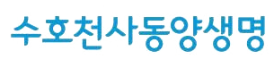
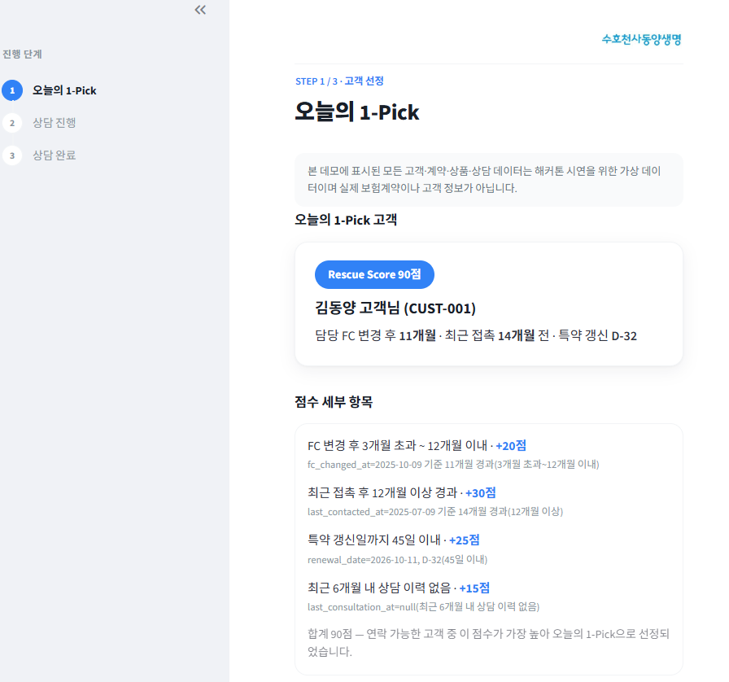
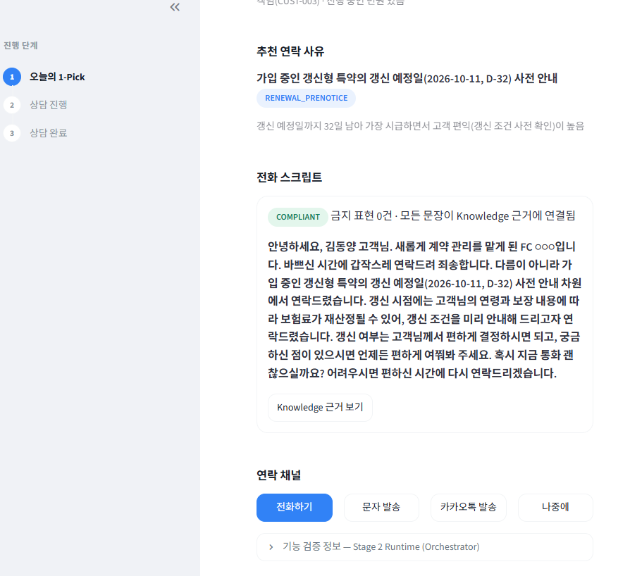

오늘 연락할
한 명을 고르는
1-pick Agent
이유 있는 선정부터 확인 가능한 기록까지,
FC의 고객 접점을 하나의 루프로 연결합니다.
김동양 고객
고객 선정부터 상담 후 기록까지,
FC 업무의 흐름이 두 번 끊깁니다
고객 신호가 흩어짐
여러 항목을 따로 확인해야 관리가 필요한 고객을 찾을 수 있습니다.
직접 확인
오늘 연락할 한 명 결정
FC가 우선순위를 정하고, 선정 이유와 연락 맥락까지 다시 정리합니다.
다시 정리
후속 업무도 수작업
통화 내용을 다시 정리하고 각 시스템에 옮겨 적어야 합니다.
고객 순위표가 아니라,
다음 행동까지 담은 Action Card를 만듭니다
연락 가능한 고객
동의 여부와 민원 진행 여부를 먼저 확인
오늘의 1-pick
김동양 고객 · 90점
선정 근거와 연락 맥락 제공
Action Card
안전한 연락 문장
CRM 초안 · 후속 일정 후보
판단은 나누고, 실행 순서는
Orchestrator가 통제합니다
🤖 Orchestrator Agent
선정 → 안전 검증 → 상담 분석 → FC 확인의 순서를 관리
고객 선정 Agent
연락 불가 고객 제외
관리 필요 점수 계산
오늘의 1-pick 선정
근거·안전 Agent
공식 자료 연결
과장·압박 표현 차단
Safety Gate 통과
상담 분석 Agent
니즈·걱정·거절 추출
CRM 초안 생성
후속 행동 후보화
🧰 Tool 계층
고객·계약 조회 · 점수 계산 · 지식 검색 · 연락 · 음성 변환 · CRM · 일정 · 피드백
📊 FC 확인 후 업무 처리
DeepWork를 한 번의 요청이 아니라
목표 · 스킬 · 하네스로 사용했습니다
Goal mode
고객 한 명 선정부터 FC 확인 후 CRM·일정 저장까지, 완료 기준을 먼저 정했습니다.
Skills
고객 선정 · 안전 검토 · 상담 분석을 책임 단위로 분리했습니다.
Harness
안전 문장만 연락하고, FC 확인 전에는 CRM·일정을 저장하지 않습니다.
목표를 관리하고,
역할을 나누고, 검증합니다
근거가 포함된 결과만 다음 단계로 이동합니다.
서비스 전체를 한 번에 생성한 것이 아니라, 목표·역할·통제 단위로 나누어 완성했습니다.
화면으로 보는
1-pick Agent


고객 한 명 추천은
시작입니다
사전 판단 시간 단축
많은 목록 대신 이유가 있는 한 명부터 바로 관리합니다.
일관성과 안전성 향상
모든 연락 문장을 공식 근거와 Safety Gate에 연결합니다.
기록 누락 감소
상담 결과가 CRM 초안과 후속 일정으로 자연스럽게 이어집니다.
추천 품질 지속 개선
추천부터 결과까지 쌓인 이력으로 다음 선택을 더 정교하게 만듭니다.